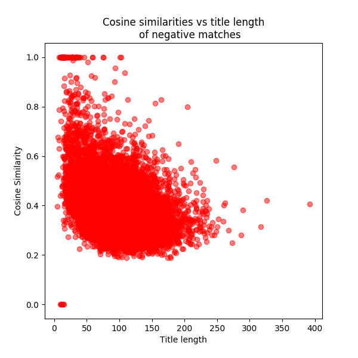
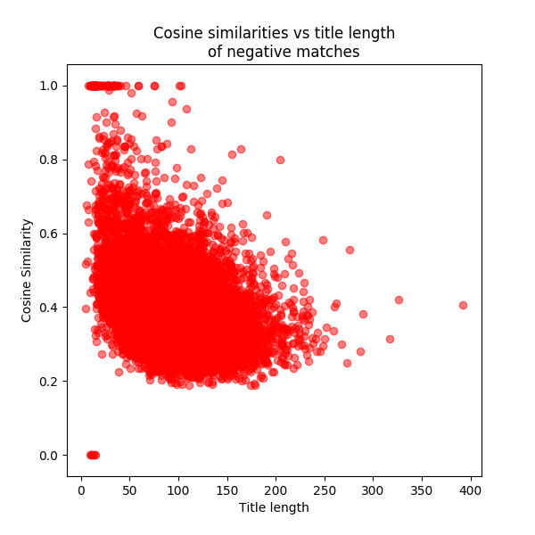
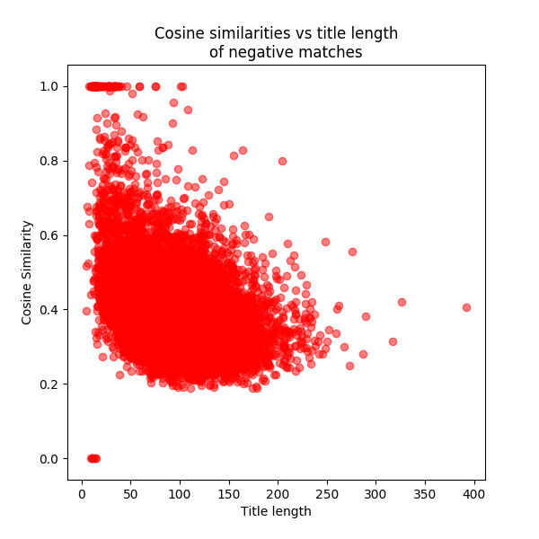

In this document we describe how we got each of the evaluation datasets uses in evaluate_algo.py. This data can be downloaded here and are stored in the repository here. We also describe the output when running evaluate_algo.
parse_pdf_document and grab_section from policytool/pdf_parser/pdf_parse.py to predict the references sections from each of the pdfs in our evaluation.Using this data we return two scores, one to see how well we identify if there is a references section or not, and one to see how well we get the actual text of this section. 1. Whether a pdf has or doesn’t have a references section is compared to whether our functions predict there to be a references section or not, returning a F1 score. We also return a classification report and a confusion matrix for this comparison, and also give these scores broken down by each references section type (e.g. ‘reference’ and ‘bibliograph’). 2. In the pdfs which do have a references section, we find the normalised Levenshtein distances for each of the actual and predicted references section texts. The proportion of pdfs with exactly the same actual and predicted texts is returned - the ‘Strict accuracy’, and we also return a more lenient score of the proportion where texts are closely similar (this is defined by a threshold parameter - LEVENSHTEIN_DIST_SCRAPER_THRESHOLD) - the ‘Lenient accuracy’.
split_section from policytool/refparse/utils/split.py to predict how many references there are from each of the references section texts.abs(100*((predicted number - actual number) / actual number))SPLIT_SECTION_SIMILARITY_THRESHOLD).MODEL_FILE_PREFIX given by the parameter MODEL_FILE_NAME we use the structure_reference function from policytool/refparse/utils/parse.pdf to predict all the reference categories for each of the evaluation references texts.LEVENSHTEIN_DIST_PARSE_THRESHOLD) - the ‘Lenient accuracy’, and break down the results by category.FuzzyMatcher from policytool/refparse/utils) against the 90,000 references, and the seconf 10,000 from the sample were matched against the 90,000 references.Summary: Filtering out ‘matches’ where the cosine similarity is less than 0.6 and the title length is less than 33 will remove lots of false positives. However, this comes at the expensive of filtering out some true positives. Thus, we made a decision (which can be challenged) that we would optimise for precision, which means that we want to be confident that our predicted matches are correct, whilst knowing that we won’t have predicted all of the matches.
Considerations: Do we want to be confident that the matches are correct but we also have some false negatives? Or do we want to be confident that we haven’t got any false positives at the expense of missing some true positives?
For this evaluation we also considered the thresholds to use when predicting whether a match should be taken forward or not. For this we plotted all the cosine similarities found from the actual = “Negative” set (i.e. the second best matches). We also investigated the relationship between cosine similarity and title length.

From these we can see that generally the cosine similarity is quite low, but when it is high (>0.8) the title length tends to be quite short. Thus we saw that if we set the match and title length thresholds to be relatively high then we’d reduce the number of false positives. The 95th percentile of the cosine similarities is 0.6 and the 5th percentile of the title length is 33.
We also looked at the distribution of title lengths in the actual = “Positive” set (i.e. where they should match exactly, hence all the matches have a cosine similarity of 1). Since we can also have incorrect matches in this set - which is where a reference has the same title as another one, we plot both the correct and incorrectly matched references from the positive set. The 5th percentile of the title length is 35.

From this we see that the incorrect matches occur when the title lengths are quite low. Thus, we can set the title length threshold to be high enough to remove some false negatives, but this is at the expense of removing some true positives.
We varied these two thresholds and recorded some metrics. In our algorithm it’s important that if we say there is a match then we are confident it is a true match (high precision). We picked the default match threshold to be 0.8 and the length threshold to be 50 based on all of these plots.